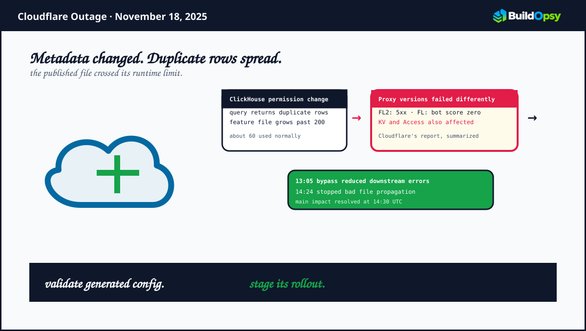
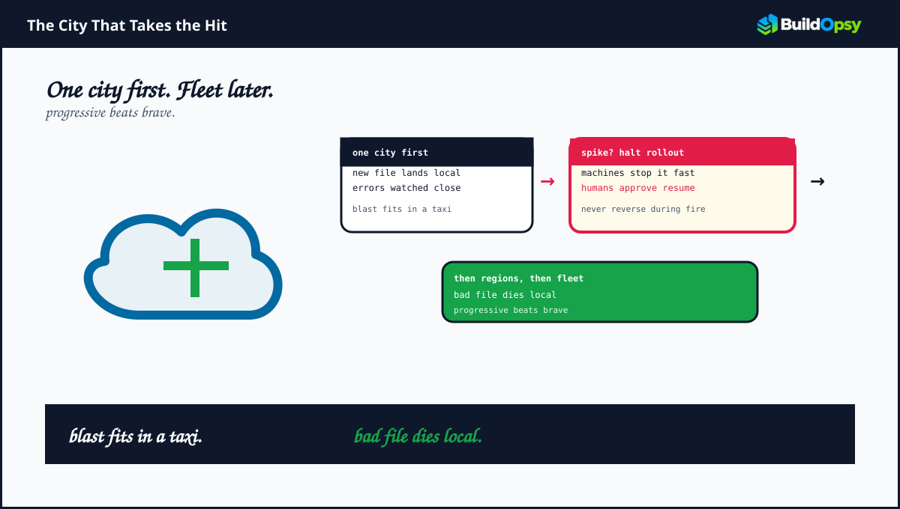

1. The Feature File Crossed a Runtime Limit
Cloudflare's November 18 incident report says a database-permission change caused a ClickHouse query to return metadata for both the default and r0 databases. The Bot Management feature-file query filtered by table name but not database name, so the new results included duplicate feature rows. The file grew to more than 200 features. Cloudflare said the runtime limit was 200 and normal use was about 60.
The feature file was generated every five minutes and propagated across the network. Cloudflare reports that the larger file caused the Bot Management module to fail on the newer FL2 proxy, returning HTTP 5xx for traffic that depended on that module. On the older FL proxy, requests did not fail in the same way, but bot scores were set to zero; customers using those scores in blocking rules could see false positives. The published account therefore describes a broad configuration distribution with different failure modes, not every server serving the same error.
2. Impact and Recovery Were Not One Event
Cloudflare's timeline says customer HTTP errors began at 11:28 UTC. The company first mitigated some Workers KV and Access impact by bypassing the affected proxy path at 13:05. At 14:24 it stopped generating and propagating new Bot Management files. A known-good file was deployed globally, and Cloudflare says the main impact was resolved at 14:30. Downstream services were fully restored by 17:06.
The company lists core CDN and security services, Turnstile, Workers KV, the dashboard login flow, and Access among the affected services. It says Workers KV's front-end gateway failed when the core proxy failed. The temporary bypass reduced that impact; it was a mitigation, not the fix for the malformed feature file. The main recovery stopped propagation and restored a known-good file.
This account is specific to the November 2025 incident. Other Cloudflare incidents are outside this article's scope and are not used to infer a recurring cause.
3. The Design Lessons
Make generated configuration obey runtime constraints. Validate row counts and schema before publishing a file, and reject or quarantine data that exceeds the consumer's supported limit. Cloudflare's report says its own file grew past the configured feature maximum.
Roll out shared configuration progressively. A file distributed across a fleet can create correlated failure. Canarying and automated rollback are general guardrails for reducing exposure; Cloudflare's report does not say these controls were present or absent in this incident.
Map dependencies for recovery. The report documents that Workers KV and Access depended on the core proxy path and that bypassing the path reduced their errors. A documented fallback can reduce shared fate, but it should be tested before an incident and its scope should be clear.

4. Guardrails for Configuration and Shared Paths
Validate generated files against the consumer's schema and capacity before they enter a distribution queue. Reject duplicate entries when duplicates are invalid, and alert on sudden size changes. Use staged rollout and a kill switch where the system supports them. Record which proxy versions consume each configuration and what happens when parsing fails.
For dependent services, document the request path and test fallback behavior independently. A bypass should specify which calls use it, what consistency guarantees remain, and how recovery returns traffic to the normal path. Measure the error rate of each dependent service during a controlled failure test rather than inferring resilience from the architecture diagram.
5. The Verdict
Cloudflare's November 2025 report establishes a specific chain: a permissions change altered metadata results; duplicate rows expanded the Bot Management feature file beyond its runtime limit; proxy versions failed differently; and dependent services shared part of the affected request path. The report also gives a recovery timeline and describes the temporary Workers KV/Access bypass.
It does not establish that every Cloudflare service failed identically, that all customer traffic was down, or that the bypass was the final fix. Operators can take the narrower design lesson: validate generated configuration at the consumer boundary, stage fleet-wide changes, and test dependency fallbacks before an incident.
A duplicate row became a fleet-wide configuration problem when validation stopped at the database boundary.
Sources and Method
Incident mechanism, impact, timeline, and the temporary Workers KV/Access bypass are attributed to Cloudflare's published November 18, 2025 report. Recommendations in Sections 3–4 are general design analysis, not claims about changes Cloudflare has completed.